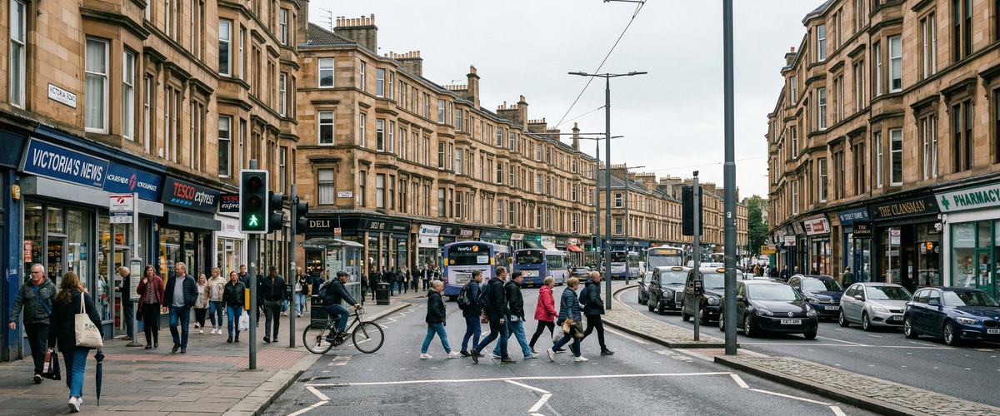
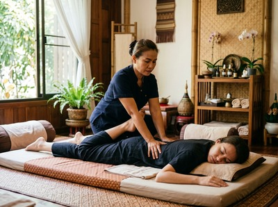
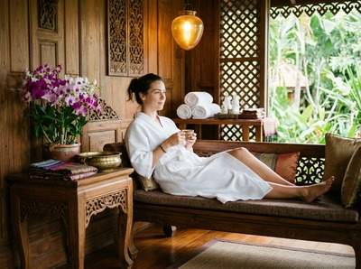

Thai massage in the Southside of Glasgow draws on a community that knows the value of doing things properly.

The Southside is a large, mostly residential part of the city south of the Clyde. It takes in neighbourhoods as different as Shawlands, Queen's Park, Strathbungo, Govanhill, Pollokshields, and Battlefield. It is one of Glasgow's most diverse areas, with independent cafés, local markets, and a strong community feel.
People here tend to be discerning. They support local businesses and look for quality over convenience. Serendipity Massage Therapy & Wellness is built for exactly that kind of client.
Southside residents and workers carry real physical demands. Whether you spend your days at a desk, on your feet in a local business, or managing a busy family life across Shawlands and Queen's Park, tension builds up in the body and does not go away on its own.
Thai massage uses assisted stretching and acupressure along sen energy lines. It is one of the most effective treatments for releasing deep muscle tension and restoring joint mobility. Serendipity's team on Hope Street is trained to deliver precisely that, with every session shaped to what your body needs.

The Southside's strong sense of community and commitment to quality makes it a natural fit for Serendipity. You can book your session online in minutes.
The journey from most Southside neighbourhoods to our Hope Street studio is simple by public transport. Evening and daytime appointments mean you can fit a session around work or a weekend in the city without rearranging your day.
Whether you need deep therapeutic work or a session focused on rest and recovery, Serendipity offers a full range of treatments for Southside clients. The team uses techniques developed by head therapist Jariya Malone, applied consistently across every appointment.
Serendipity Massage Therapy is at Floor 1, Suite 50, Central Chambers, 93 Hope Street, Glasgow G2 6LD. From most parts of the Southside, the subway is the simplest route. Bridge Street, West Street, and Shields Road all connect to the city centre in minutes.
From Bridge Street or West Street, the walk to Hope Street takes around ten minutes.
If you are travelling from Shawlands, Queen's Park, or Govanhill, First Bus routes 3, 4, and 38 run directly into the city centre along Pollokshaws Road and Victoria Road. These routes bring you close to Hope Street and Glasgow Central.
The whole journey from most Southside neighbourhoods takes no more than twenty to twenty-five minutes.
Glasgow Central Station is also a short walk from Hope Street. It is a good option if you are coming in by train from the southern suburbs. Once you arrive, the studio entrance is on Hope Street in the heart of Glasgow's financial district.
For Southside residents dealing with neck pain, back tension, or the wear that comes from an active or desk-based lifestyle, a regular session at Serendipity offers more than an hour away from routine. Treatments address real physical issues: tight muscles, postural strain, stress-driven tension, and poor sleep. You can book a treatment online and choose from morning, afternoon, or evening appointments to fit your week.
Aromatherapy massage is popular with clients who carry stress in the shoulders, neck, and upper back long after the day ends. Sports massage draws in runners and cyclists who use Queen's Park and Pollok Country Park, helping with recovery and injury prevention.
Whatever brings you through the door, the team will take the time to understand your needs before the session begins.

Serendipity is a professional team practice, not a sole trader. Every therapist is trained to the same standard using the techniques developed by Jariya Malone, so quality is consistent whether you visit once or make it a regular part of how you manage your health.
That consistency is what our long-term clients tell us they value most. Book your first session and find out what a well-delivered treatment can do.
The Southside has a rich history across its many distinct neighbourhoods. From the legacy of Pollok House and the villas of Pollokshields, to the tenements of Strathbungo and the Victorian terraces around Queen's Park, the area reflects Glasgow at its most community-rooted. Find out more at Glasgow Southside on Wikipedia.
From most Southside neighbourhoods, the journey to our Hope Street studio takes around twenty to twenty-five minutes. The subway from Bridge Street or West Street reaches the city centre quickly. From either station, it is a ten-minute walk to Hope Street. Bus routes along Pollokshaws Road and Victoria Road also bring you into the city centre directly.
From Shawlands and Queen's Park, First Bus routes 3, 4, and 38 run into the city centre and are a reliable option. You can also take a bus to Bridge Street or West Street and use the Glasgow Subway from there. Either way, the journey from most Southside addresses is well under thirty minutes.
Same-day availability depends on the current schedule. The quickest way to check is through our online booking page. We offer morning, afternoon, and evening slots throughout the week, so there is often something available at short notice. Booking a day or two ahead gives you the best choice of times and therapists.
Traditional Thai massage is a strong choice for releasing neck and shoulder tension that builds up from desk work. It uses acupressure and assisted stretching to restore range of motion, with no oils, so it works well during a lunch break or before heading home. For clients carrying a lot of stress who want something more restorative, aromatherapy massage using therapeutic-grade essential oils can also support relaxation and better sleep. The team will always take time to understand what you need before recommending a treatment.
Serendipity offers morning, afternoon, and evening appointments to fit around working schedules. Evening slots make it easy for Southside clients to visit after office hours without taking time off work. The most up-to-date availability is always shown on our online booking system at serendipitymassage.co.uk. You can also call us on 0141 673 6630 if you prefer to speak with the team directly.